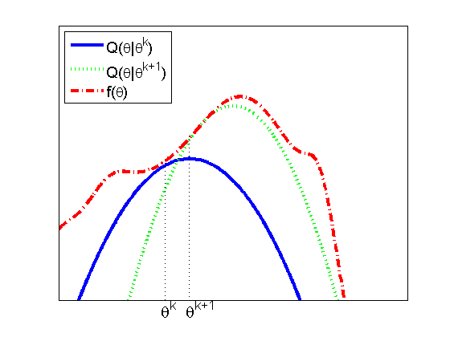

Bound optimization illustration
f1 = @(x) log(gaussProb(x, 0, 0.25^2))' + 1;
f2 = @(x) log(gaussProb(x, 1, 0.2^2))' + 20;
f3 = @(x) 5*sin(2*(x-0.5)) + ...
f1(0.5*x) + ...
f2(0.5*x) + ...
3.5+20 * gaussProb(x, -2 , 0.5.^2)' - ...
20 * gaussProb(x, 3 , 1.^2 )' - ...
70 * gaussProb(x, 4 , 0.5.^2)' + ...
40 * gaussProb(x, -3 , 0.5.^2)' + ...
100 * gaussProb(x, -4 , 0.8.^2)' + ...
10 * gaussProb(x, 3 , 0.3.^2)' - ...
10 * gaussProb(x, -2.8 , 0.5.^2)';
domain = -5:0.01:5;
figure; hold on;
p1 = plot(domain, f1(domain), '-b ', 'LineWidth', 3);
p2 = plot(domain, f2(domain), ':g ', 'LineWidth', 3);
p3 = plot(domain, f3(domain), '-.r', 'LineWidth', 3);
axis([-3 5 -50 50]);
box on;
set(gca, 'XTick', [], 'YTick', []);
legend([p1, p2, p3], ...
{'Q(\theta|\theta^k)', 'Q(\theta|\theta^{k+1})', 'f(\theta)'}, ...
'Location', 'NorthWest', 'FontSize',14);
annotation(gcf, 'line', [0.42 0.42], [0.5976 0.1108] , 'LineStyle', ':');
annotation(gcf, 'line', [0.3673 0.3673],[0.5146 0.1108], 'LineStyle', ':');
annotation(gcf, 'textbox', [0.3447 0.02411 0.08859 0.1012], ...
'String', {'\theta^{k}'},...
'FontSize', 16,...
'FitBoxToText', 'off',...
'LineStyle', 'none');
annotation(gcf, 'textbox', [0.4 0.02411 0.08859 0.1012], ...
'String', {'\theta^{k+1}'}, ...
'FontSize', 16, ...
'FitBoxToText', 'off', ...
'LineStyle', 'none');
printPmtkFigure boundOptQ;
